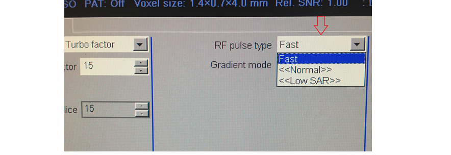

|
Introduction In MRI bandwidth is defined as the amount of frequencies or wavelengths that can be transmitted or received in a limited amount of time. Bandwidth is measured in cycles per second or Hertz (Hz). An MRI sequence is designed with two types of bandwidths: transmitter bandwidth (tBW) and receiver bandwidth (rBW). Transmitter bandwidth describes the properties of transmitted radiofrequency (RF) pulses and receiver bandwidth describes the quality of MRI signal.
Transmitter bandwidth is the bandwidth used during the transmission of RF pulses. This is used to excite a discrete slice thickness or volume. The lowest possible slice thickness of a pulse sequence is directly proportional to the transmitter bandwidth of the RF pulse type i.e. the higher the transmitter bandwidth higher the lowest possible slice thickness. Siemens scanners offer three type of RF pulses in most of their sequences. A low specific absorption rate (SAR) option which is the low bandwidth pulse, a normal option which is the medium bandwidth pulse and a Fast option which is the higher bandwidth pulse.
 Low SAR This is a low bandwidth RF pulse with very good slice profile and allows less crosstalk between slices. This option will allow you to choose the lowest possible slice thickness in most pulse sequences. This RF pulse type will give reduced SAR values. Choosing this option reduces the chance of the sequence going into first level mode. A disadvantage of the low SAR RF pulse type are long scan times due to longer minimum TEs, TRs and echo spacing (the time from one echo to the next echo). Also, low transmitter bandwidth pulse type is more susceptible to susceptibility and distortion artefacts. Normal This is a medium bandwidth RF pulse with good slice profile and optimized SAR behaviour. Fast This is a high bandwidth RF pulse with compromised slice profile and will give a higher SAR compared to the other modes. This RF pulse type will provide the user an opportunity to reduce TEs and TRs. It has shorter echo spacing (ES) and very minimal susceptibility and distortion artefacts. It should be noted that a Fast RF pulse will have a higher chance of peripheral nerve stimulation.
Practical applications of low transmitter bandwidth (Low SAR mode) Low transmitter bandwidth mode is the most appropriate option to choose when scanning neonates and sedated patients due to their inability to feedback to the operator. Low SAR mode must be chosen while scanning pregnant patients to avoid any potential RF harm to the foetus. Low transmitter bandwidth RF pulses are also useful for scanning patients with MRI conditional implants e.g. MRI conditional pacemakers, heart valves. Practical applications of high transmitter bandwidth (Fast mode)High transmitter bandwidth can be used effectively to reduce scan times in claustrophobic and moving patients. This option will significantly reduce the minimum TR and TE values allowing the user to reduce the TR and TE values manually, reducing scan time. The main disadvantage of this method is shortening the TEs and TRs usually results in more noise and increases the potential for peripheral stimulation. The diagrams below show how to choose these options and the results of the manipulations.
High transmitter bandwidth is the most appropriate option to select when scanning areas with metal implants. This option will significantly reduce the susceptibility and distortion artefacts. During these sequences it is important to carefully monitor the SAR levels to avoid RF burns. The examples below show the differences in image quality using low and high transmitter bandwidths in a patient with metal crowns.
The receiver bandwidth is the range of frequencies used during the reception of RF pulses. During the reception phase the readout gradient receives a range of frequencies and converts it into an MR signal using an analogue digital converter (ADC). The time taken for the ADC to check and store the amplitude of the echo signal is called the dwell time (D). For a 256 matrix the ADC samples the signal 256 times. Total sampling time (Ts) = matrix in read (N) x dwell time (D) The receiver bandwidth is the reciprocal of the total sampling time. The unit of receiver bandwidth is Hertz (Hz)/pixel. Bandwidth: BW = 1/Ts [Hz/pixel] Each manufacturer defines the receiver bandwidth differently. Siemens and Toshiba scanners use receiver bandwidth per pixel (Hz/pixel). GE scanners use the bandwidth of the entire matrix which is usually measured in kHz. Philips scanners use the water-fat shift in pixels (WFS) to measure the bandwidth. In a 1.5T scanner the resonating frequency difference between a fat and water proton is 220Hz and in a 3T scanner it is about 440Hz. WFS in 1.5Tscanner = (Hz/pixel)/ 220Hz
Receiver bandwidth is one of the parameters you can change on most scanners. Bandwidth and sampling time are inversely proportional to each other. Increasing the bandwidth shortens sampling time. It however reduces the signal amplitude and increases the noise level in pixels resulting in a significant reduction in the signal-to-noise ratio (SNR) of the image.
Increasing the receiver bandwidth shortens the scan time by allowing shorter TR and TEs. For example, a T1 sequence with a bandwidth of 130 with 600 TR and 25 TE is usually acquired in about 3.30 minutes. The same sequence with a bandwidth of 300 will give you the option to reduce the minimum TR to 450 and TE to 16 reducing the scan time from 3.30 minutes to 2.10 minutes. This option can be used for scanning claustrophobic and moving patients. A disadvantage is that choosing a higher bandwidth results in a reduction in the SNR.
Increasing the receiver bandwidth can be a method to produce less blurry images as it reduces the echo spacing. In turbo spin echo sequences, higher bandwidth increases the turbo factor due to short echo spacing. This increase in turbo factor results in a higher fat signal in TSE scans.
Higher receiver bandwidth sequences are also very effective in reducing metallic susceptibility artefacts. The area around the implant is manipulated by strong local off-resonances resulting in field distortions. The degree of field distortions depends on the size, shape and properties of the metal. During signal processing these in-plane and through-plane distortions will shift the image pixels from their real positions resulting in a distorted image. The regions with severe field changes will lead to signal voids and appear as black areas in the image. The regions with signal pileups appear as very bright areas. Increasing the bandwidth reduces the through-plane distortion of the slice profile and produces less distorted final images.
Higher receiver bandwidth also reduces chemical shift artefacts. Fat protons resonate at an approximately 3.3 ppm lower frequency than water protons due to the difference in their molecular structure. Signals from fat protons always shift to lower frequencies by a certain pixel in the readout direction. This is known as chemical shift artefact. The degree of shifting depends on the bandwidth and field strength of the magnet. Increasing the receiver bandwidth will reduce chemical shift artefact by reducing the shifting of fat protons. Higher field strengths increase the chemical shift artefact which usually appears in 1.5T and 3T scanners.
Decreasing the bandwidth increases the SNR. This method can be used to boost the SNR in high resolution scans with very small field of views e.g. temporomandibular joint (TMJ) imaging. Reducing the bandwidth will increase the TR, TE and echo spacing. This results in an increase the scan time and can also increases the chances of chemical shift, distortion and susceptibility artefacts.
Lower receiver bandwidths will reduce the minimal field of view. For example, a sequence with a bandwidth of 250 will give a minimum field of view of 130 and the same sequence with a bandwidth of 80 will reduce the minimum field to 90. This option can be used while scanning small body parts e.g. TMJ and thumb imaging.
Bandwidth is one of the main parameters that can be manipulated by the Radiographer to reduce scan time, increase SNR and reduce artefacts. The section below will show you how to manipulate the bandwidth while maintaining the SNR. For the manipulation of bandwidth, it is necessary to know the relationship of bandwidth with other parameters. Radiographers can choose one of the following techniques to successfully manipulate the bandwidth. Bandwidth and ResolutionBoth resolution and bandwidth uses the readout gradient. The higher the resolution, the higher the readout gradient. A higher bandwidth also requires a higher readout gradient. Increasing the bandwidth and resolution at the same time increases the workload of the readout gradient. The result is a significant drop in the SNR producing very grainy images. If you want to increase the bandwidth to reduce artefacts it is necessary to compensate the SNR by manipulating other parameters. One of the main parameters that you can reduce to improve the SNR is resolution. For example, take a T1 TSE sequence with 200 FOV, 320x320 matrix and bandwidth of 130. If you want to increase the bandwidth from 130 to 500 the signal will drop from 100% to 49% of the original SNR. To compensate for the signal drop you can reduce the matrix size from 320x320 to 256x256. This will increase the signal from 49% to 85% and will also reduce the scanning time. Increasing the bandwidth will provide the user the option to reduce the TE and TR, reducing the scan time further. This is one of the most effective ways of cutting down the scanning time with very minimal quality loss. It is the most time efficient method while scanning metal implants, claustrophobic and moving patients.
Increasing the bandwidth will reduce the SNR. Increasing the averages is the most appropriate technique to increase SNR. For example, take a T1 TSE sequence with a bandwidth of 100, averages 2 and a relative SNR of 100%. Increasing the bandwidth from 100 to 250 will reduce the SNR to 74% of the original SNR. The signal loss can be compensated by increasing the averages from 2 to 3. This method will provide better quality images than the previous option. The down side of this method is that it will significantly increase the scan time. This is the most appropriate technique to use if time is not of concern.
Increasing the FOV will increase the pixel size. Larger pixels will receive more signals and produce high SNR images. In order to compensate from the SNR loss from increasing the bandwidth the user can increase the FOV. For example, take a T1 TSE sequence with 200 FOV, bandwidth of 130 and a relative SNR of 100%. Increasing the bandwidth from 130 to 250 will reduce the SNR to 74%. Increasing the FOV from 200 to 260 will bring the SNR back to 100%. This method will however slightly reduce the image quality. It is not an appropriate method to choose where high-resolution scanning is required e.g. pituitary fossa imaging.
Increasing the oversampling will increase the SNR and reduce aliasing artefacts. This option can be used to increase the SNR in small field of view scans with high bandwidth e.g. prostate imaging. This method will result in superior image quality. The only disadvantage of this method is that the scan time will increase.
|


%20mri.jpg)


.jpg)

%20and%20low%20metal%20artifacts.jpg)